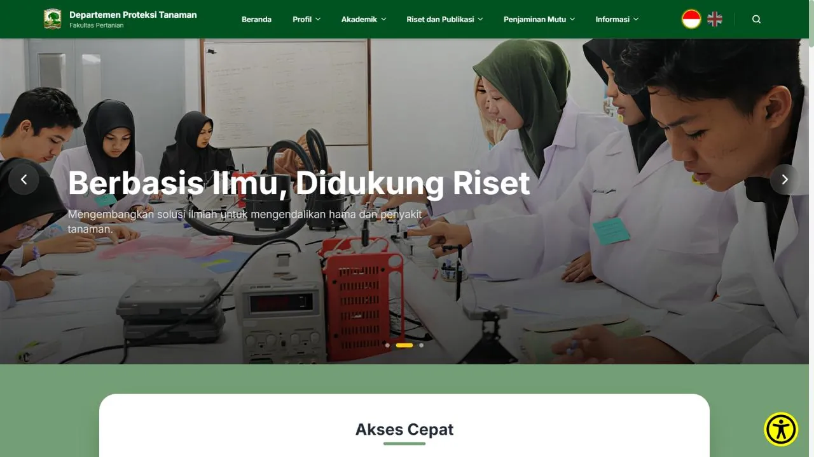
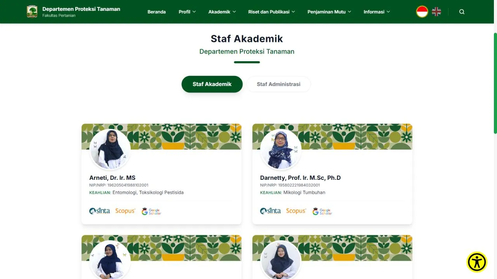
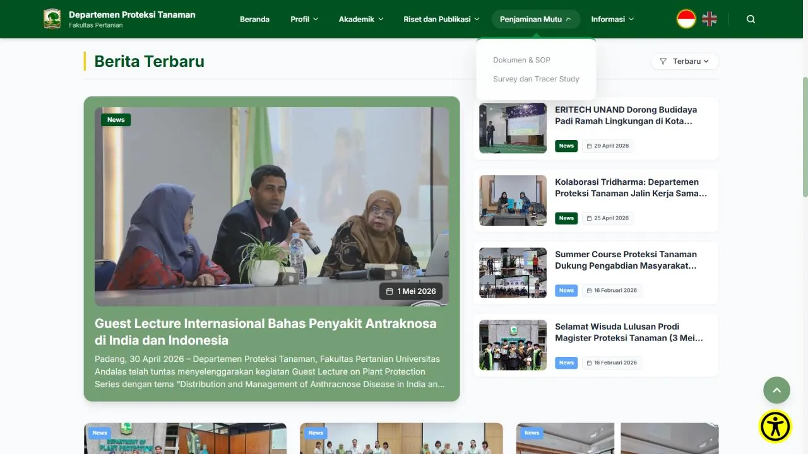

01 / Web Platform
Plant Protection Department — Universitas Andalas
Commissioned as an external developer to rebuild the department's official website. A modern, scalable headless architecture — Strapi CMS for content, Next.js on the front — delivering a more engaging site than other department pages in the faculty. Live in production.
Role — Project Manager & Frontend Developer



Process — how it was built
-
01
Research
Requirements & benchmarking
Sat with the faculty to map what content they publish and who maintains it, and audited other department sites to set a higher bar.
-
02
Design
UI/UX in Figma
Designed the layout and a reusable component system, prioritising clarity and a calm, official tone.
-
03
Build
Headless front end
Built the front in Next.js against a Strapi CMS so non-technical staff can edit content without touching code.
-
04
Ship
Deploy & handover
Shipped to production and handed over the CMS, leaving the team able to run the site themselves.